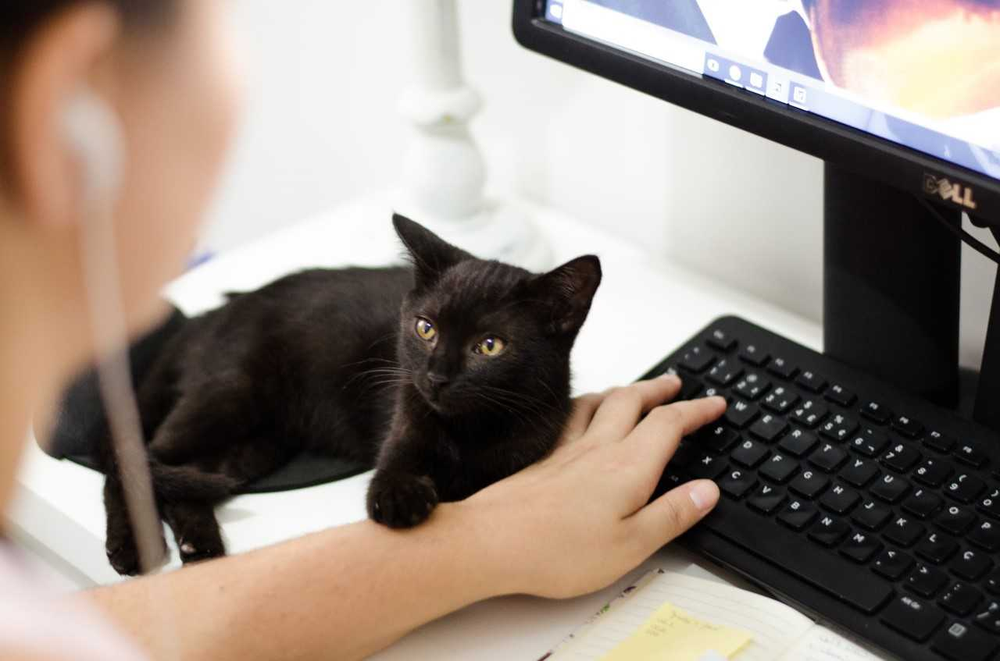
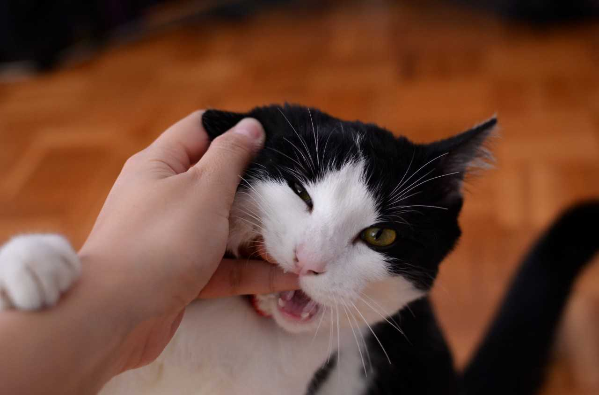
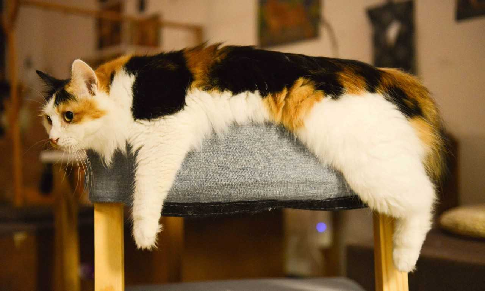
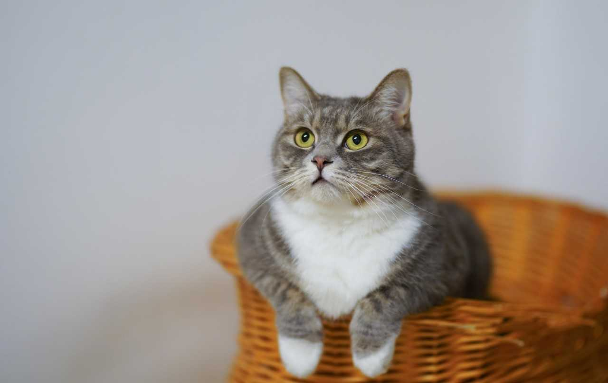
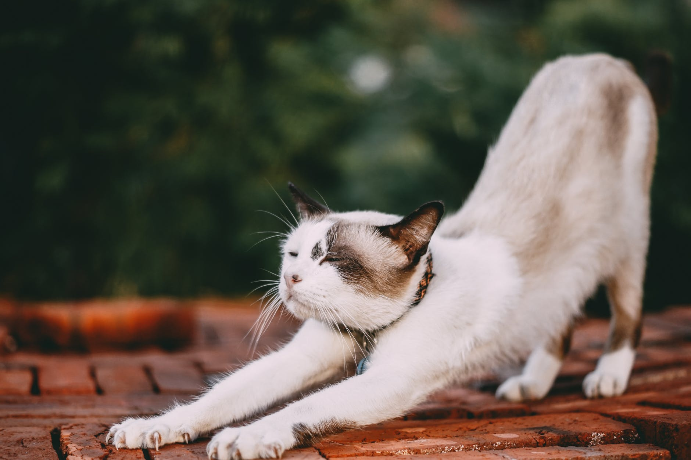

Rusina is a peaceful 7-year-old cat looking for a peaceful home. He is the longest-time resident here. He’s very social and he always comes to welcome our guests. He’s from a small population in Uusimaa, and he prefers the company of humans over our other cats.

Turo is an 11-year-old cat, and he moved in a year ago, when his former owner brought him to us. He’s very bold and social, and he quickly became the leader of out pack. He enjoys himself around humans, but be careful not to leave your plate around, because Turo is quickly there to eat your food.
12-year-old Kille was rescued from the streets of Turku. He is our oldest cat. When she moved in she used to hide under closets, but nowadays he is one of our bravest cats, and he’s always to first to greet our guests.
Hilla is a shy cat from a population in Lohja, and she is looking for a home where the psyche of a shy cat is appreciated. She has become bolder while living here, but still she is shier than our other cats.
Tuure is a wild and mischievous cat who is always on the move. He is our newcomer – he moves in two months ago. Despite being so brisk, he is usually shy around our guests. He has a habit of fleeing immediately when the door opens.
Charlotta is a lively cat, who has found a new owner from Kuopio. She came to us from a population in Rauma a year ago, and found her new owner last winter.